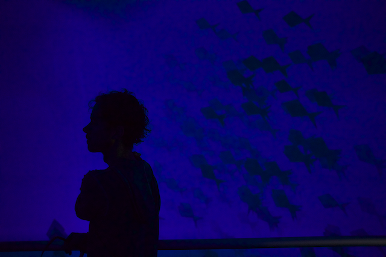
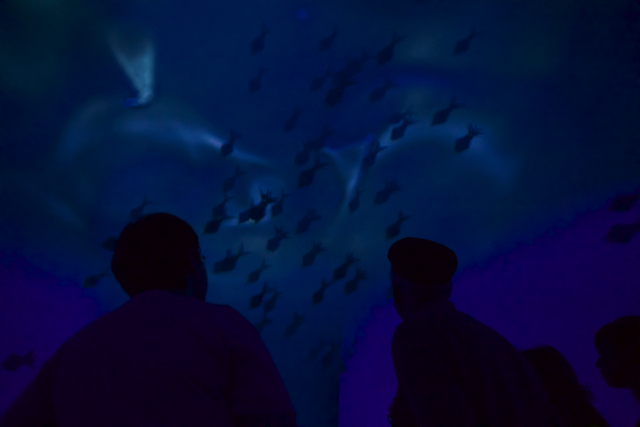

Flocking rules simulate behavior of fishes underwater. The scene gets rendered in full surrounding spherical viewport so that it can be projected onto the inner surface of 5-meter-radius sphere, the AlloSphere at UCSB. Positions of fishes will also spatialize the sound inside the sphere.
 